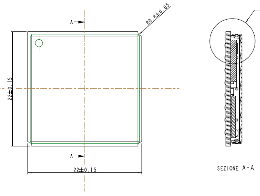
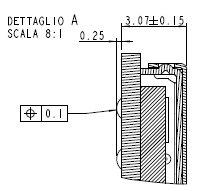
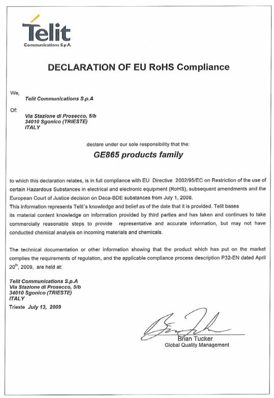
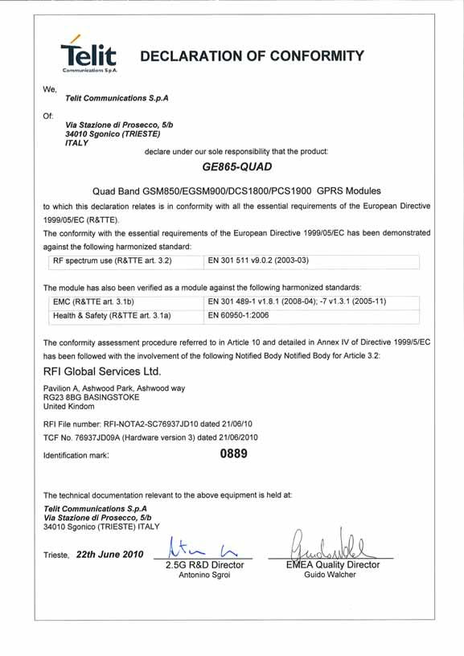
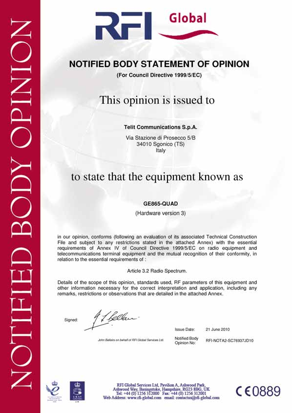
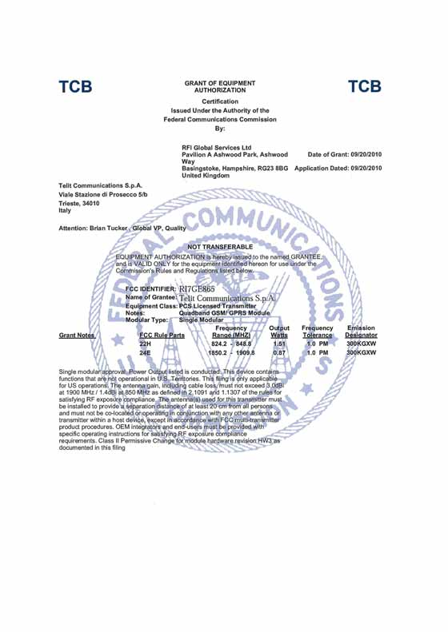
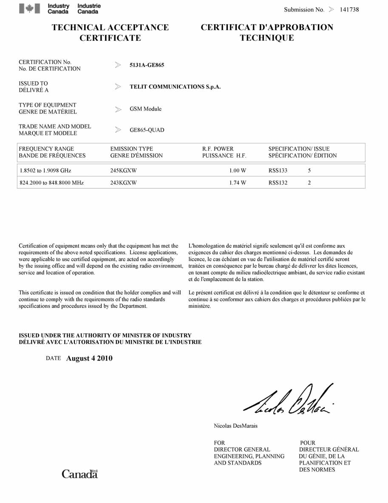

GE865-QUAD Product Description
80309ST10054A Rev.4 – 2010-10-22


GE865-QUAD Product Description
80309ST10054A Rev.4 – 2010-10-2
Disclaimer
The information contained in this document is the proprietary information of Telit
Communications S.p.A. and its affiliates (“TELIT”).
The contents are confidential and any disclosure to persons other than the officers,
employees, agents or subcontractors of the owner or licensee of this document,
without the prior written consent of Telit, is strictly prohibited.
Telit makes every effort to ensure the quality of the information it makes available.
Notwithstanding the foregoing, Telit does not make any warranty as to the
information contained herein, and does not accept any liability for any injury, loss or
damage of any kind incurred by use of or reliance upon the information.
Telit disclaims any and all responsibility for the application of the devices
characterized in this document, and notes that the application of the device must
comply with the safety standards of the applicable country, and where applicable,
with the relevant wiring rules.
Telit reserves the right to make modifications, additions and deletions to this
document due to typographical errors, inaccurate information, or improvements to
programs and/or equipment at any time and without notice.
Such changes will, nevertheless be incorporated into new editions of this document.
Copyright: Transmittal, reproduction, dissemination and/or editing of this document
as well as utilization of its contents and communication thereof to others without
express authorization are prohibited. Offenders will be held liable for payment of
damages. All rights are reserved.
Copyright © Telit Communications S.p.A. 2010.
Reproduction forbidden without Telit Communications S.p.A’s. written authorization - All Rights Reserved.
Page 2 of 41


GE865-QUAD Product Description
80309ST10054A Rev.4 – 2010-10-2
Contents
1. Introduction .............................................................................................................6
1.1. Scope............................................................................................................................ 6
1.2. Audience....................................................................................................................... 6
1.3. Contact Information, Support ...................................................................................... 6
1.4. Document Organization ............................................................................................... 6
1.5. Text Conventions.......................................................................................................... 7
1.6. Related Documents ..................................................................................................... 7
1.7. Document History ........................................................................................................ 8
2. The GE865-QUAD .....................................................................................................9
2.1. Product Overview ......................................................................................................... 9
2.2. Target Market .............................................................................................................. 9
2.3. Product Features ......................................................................................................... 9
3. Product Description ...............................................................................................14
3.1. Size and 2D mechanical drawing............................................................................... 14
3.2. Weight ........................................................................................................................ 15
3.3. Environmental requirements .................................................................................... 15
3.3.1.
Temperature range ..........................................................................................................15
3.3.2.
RoHS compliance .............................................................................................................15
3.4. Operating Frequency ................................................................................................. 15
3.5. Transmitter output power ......................................................................................... 16
3.6. Receiver sensitivity .................................................................................................... 16
3.7. Antenna ...................................................................................................................... 16
3.8. Supply voltage ............................................................................................................ 16
3.9. Power consumption ................................................................................................... 17
3.10.
The user interface .................................................................................................. 17
3.11.
Speech CODEC........................................................................................................ 17
3.12.
SIM Reader ............................................................................................................. 17
3.13.
SMS ......................................................................................................................... 17
Reproduction forbidden without Telit Communications S.p.A’s. written authorization - All Rights Reserved.
Page 3 of 41


GE865-QUAD Product Description
80309ST10054A Rev.4 – 2010-10-2
3.14.
Real Time Clock and Alarm.................................................................................... 18
3.15.
Enhanced Measurement Report ............................................................................ 18
3.16.
Data transmission capabilities............................................................................... 18
3.17.
Local security management................................................................................... 18
3.18.
Call control ............................................................................................................. 18
3.19.
Phonebook .............................................................................................................. 18
3.20.
Characters management ....................................................................................... 18
3.21.
SIM related functions ............................................................................................. 19
3.22.
Call status indication.............................................................................................. 19
3.23.
Automatic answer (Voice, Data) ............................................................................. 19
3.24.
Supplementary services (SS) ................................................................................. 19
3.25.
Acoustic signaling................................................................................................... 19
3.26.
Buzzer output ......................................................................................................... 20
3.27.
RF Transmission Monitor (RFTXMON) ................................................................... 20
3.28.
RF Transmission Control ....................................................................................... 20
3.29.
TTY (Telephone Text) .............................................................................................. 20
3.30.
Logic level specifications ....................................................................................... 20
3.31.
Audio ....................................................................................................................... 21
3.31.1.
Analog ...........................................................................................................................21
3.31.2.
Digital ............................................................................................................................21
3.32.
Serial Ports............................................................................................................. 21
3.33.
Converters .............................................................................................................. 21
3.33.1.
ADC Converter ..............................................................................................................21
3.33.2.
DAC Converter ..............................................................................................................21
3.34.
Mounting the GE865-QUAD on your Board ............................................................ 21
3.35.
Packing system....................................................................................................... 21
4. Evaluation Kit .........................................................................................................22
5. Software Features..................................................................................................23
5.1. Easy GPRS Extension................................................................................................. 23
5.1.1.
Overview............................................................................................................................23
Reproduction forbidden without Telit Communications S.p.A’s. written authorization - All Rights Reserved.
Page 4 of 41


GE865-QUAD Product Description
80309ST10054A Rev.4 – 2010-10-2
5.2. Multisocket................................................................................................................. 23
5.3. Jamming Detection.................................................................................................... 24
5.3.1.
Overview............................................................................................................................24
5.4. CMUX.......................................................................................................................... 24
5.4.1.
Architecture ......................................................................................................................24
5.4.2.
Features............................................................................................................................24
5.5. Easy Script Extension - Python interpreter............................................................... 26
5.5.1.
Overview............................................................................................................................26
5.5.2.
Python 1.5.2+ Copyright Notice........................................................................................27
5.6. SAP: SIM Access Profile ............................................................................................ 28
5.6.1.
Architecture ......................................................................................................................28
5.6.2.
Implementation features .................................................................................................28
5.6.3.
Remote SIM Message Command Description.................................................................28
5.7. Premium FOTA Management (PFM) Service............................................................. 29
5.7.1.
FOTA (Firmware Over The Air) .........................................................................................29
5.8. AT Commands............................................................................................................ 30
6. Conformity Assessment Issues ..............................................................................31
6.1. RoHS Certificate......................................................................................................... 33
6.2. GE865-QUAD CE Conformity Assessment ................................................................ 34
6.3. GE865-QUAD FCC Conformity Assessment .............................................................. 36
6.4. GE865-QUAD IC Conformity Assessment.................................................................. 37
7. SAFETY RECOMMENDATIONS ................................................................................38
8. List of acronyms ....................................................................................................40
Reproduction forbidden without Telit Communications S.p.A’s. written authorization - All Rights Reserved.
Page 5 of 41


GE865-QUAD Product Description
80309ST10054A Rev.4 – 2010-10-2
1.
Introduction
1.1.
Scope
Scope of this document is giving an overview of the Telit GE865-QUAD module, which
is a very small GSM/GPRS module with data and voice capabilities.
1.2.
Audience
This document is intended for customers who are evaluating the GE865-QUAD.
1.3.
Contact Information, Support
For general contact, technical support, to report documentation errors and to order
manuals, contact Telit’s Technical Support Center (TTSC) at:
TS-EMEA@telit.com
TS-NORTHAMERICA@telit.com
TS-LATINAMERICA@telit.com
TS-APAC@telit.com
Alternatively, use:
http://www.telit.com/en/products/technical-support-center/contact.php
For detailed information about where you can buy the Telit modules or for
recommendations on accessories and components visit:
http://www.telit.com
To register for product news and announcements or for product questions contact
Telit's Technical Support Center (TTSC).
Our aim is to make this guide as helpful as possible. Keep us informed of your
comments and suggestions for improvements.
Telit appreciates feedback from the users of our information.
1.4.
Document Organization
This document contains the following chapters:
“Chapter 1: “Introduction” provides a scope for this document, target audience,
contact and support information, and text conventions.
“Chapter 2: “The GE865-QUAD” gives an overview of the features of the product.
Reproduction forbidden without Telit Communications S.p.A’s. written authorization - All Rights Reserved.
Page 6 of 41


GE865-QUAD Product Description
80309ST10054A Rev.4 – 2010-10-2
“Chapter 3: “Product Description” describes in details the characteristics of the
product.
“Chapter 4: “Evaluation Kit” provides some basic information about the Evaluation Kit.
“Chapter 5: “Software Features” provides an overview of the software features of the
products.
“Chapter 6: “Conformity Assessment Issues” provides some fundamental hints about
the conformity assessment that the final application might need.
“Chapter 7: “Safety Recommendation” provides some safety recommendations that
must be follow by the customer in the design of the application that makes use of the
GE865.
1.5.
Text Conventions
Danger – This information MUST be followed or catastrophic equipment failure
or bodily injury may occur.
Caution or Warning – Alerts the user to important points about integrating the
module, if these points are not followed, the module and end user equipment
may fail or malfunction.
Tip or Information – Provides advice and suggestions that may be useful when
integrating the module.
All dates are in ISO 8601 format, i.e. YYYY-MM-DD.
1.6.
Related Documents
 Hardware User Guide
 Software User Guide
 AT Command User Guide
 CMUX User Guide
 SAP User Guide
 Easy Script User Guide
 Audio Settings User Guide
Reproduction forbidden without Telit Communications S.p.A’s. written authorization - All Rights Reserved.
Page 7 of 41


GE865-QUAD Product Description
80309ST10054A Rev.4 – 2010-10-2
 Easy GPRS User Guide
1.7.
Document History
Revision
Date
Changes
Location
0
2009-02-16
First issue
Trieste
1
2009-06-12
DVI added
Trieste
Update of power consumption data
FAX removed
Update on packing system
TTY support added
SMS over GPRS added
Multiple audio settings added
3GPP Release 4 compliance added
CSD transparent data removed
GERAN feature package 1 added
DARP/SAIC added
GSM, 8859-1 and UCS2 character
sets added
Jamming Detection reviewed
ICMP protocol support added
SPI support removed
2
2009-07-17
SIM Toolkit 3GPP reference spec
Trieste
added
NACC, Extended TBF added
Conformity Assessment Issues
updated
RoHS certificate added
Safety Recommendations updated
3
2009-10-08
Sensitivity updated
Trieste
Power consumption figures
updated
Enhanced Measurement Report
added
4
2010-10-22
Updated §6 about conformity
Trieste
assessment
Updated current consumption
Reproduction forbidden without Telit Communications S.p.A’s. written authorization - All Rights Reserved.
Page 8 of 41


GE865-QUAD Product Description
80309ST10054A Rev.4 – 2010-10-2
2.
The GE865-QUAD
2.1.
Product Overview
The new GE865-QUAD product introduces the smallest GSM/GPRS Ball-Grid-Array
(BGA) module in the market.
The GE865-QUAD extends Telit’s range of BGA products, incorporating a single-chip
solution built on 0.13 μm CMOS technology into a 22 x 22 x 3 mm block.
The low profile and small size of the unique BGA package for the GE865-QUAD
enable the design of extremely compact applications. Since connectors are
eliminated, the solution cost is significantly reduced compared to conventional
mounting.
With its ultra-compact design and extended temperature range, the Telit GE865-
QUAD product is the perfect platform for high-volume m2m applications and mobile
data devices. Additional features such as integrated TCP/IP protocol stack and serial
multiplexer extend functionality of the application at no additional cost.
The GE865-QUAD makes it possible to run the customer's application inside the
module using Python Script Interpreter, thus making it the smallest, complete
platform for m2m solutions.
The GE865-QUAD module, support Over-the-Air firmware update by means Premium
FOTA Management. By embedding the RedBend’s vCurrent Mobile® agent, a proven
and battle-tested technology powering hundreds of millions of cellular handsets
world-wide, Telit is able to update its products by transmitting only a delta file, which
represents the difference between one firmware version and another.
2.2.
Target Market
The GE865-QUAD is designed and developed for the usage in applications such as:
 Telemetry
 Telematics
 Security alarms
 Automated Meter Reading (AMR)
 POS terminals
 PDAs and Mobile Computing
 Automotive and Fleet Management applications
2.3.
Product Features
 Quad-band EGSM 850 / 900 / 1800 / 1900 MHz
Reproduction forbidden without Telit Communications S.p.A’s. written authorization - All Rights Reserved.
Page 9 of 41


GE865-QUAD Product Description
80309ST10054A Rev.4 – 2010-10-2
 GSM/GPRS protocol stack 3GPP Release 4 compliant
 Output power
- Class 4 (2W) @ 850 / 900 MHz
- Class 1 (1W) @ 1800 / 1900 MHz
 Control via AT commands according to 3GPP 27.005, 27.007 and Telit custom
AT commands
 Control via Remote AT commands
 Power consumption (typical values)
- Power off: ‹ 62 uA
- Idle (registered, power saving): 1.5 mA @ DRX=9
 Serial port multiplexer 3GPP 27.010
 SIM Application Toolkit 3GPP TS 51.014
 SIM Access Profile
 Extended Supply voltage range: 3.22 – 4.5 V DC (3.8 V DC nominal)
 TCP/IP stack access via AT commands
 Sensitivity:
≤- 107 dBm (typ.) @ 850 / 900 MHz
≤- 106 dBm (typ.) @ 1800 / 1900 MHz
 DARP/SAIC support
 Enhanced Measurement Report support
 Dimensions: 22 x 22 x 3 mm
 Weight: 3.2 grams
 Extended temperature range
-40°C to +85°C (operational)
-40°C to +85°C (storage temperature)
 RoHS compliant
Interfaces
 10 I/O ports maximum
 Analog audio (balanced)
 Digital Voice Interface
 2 A/D plus 1 D/A converters
Reproduction forbidden without Telit Communications S.p.A’s. written authorization - All Rights Reserved.
Page 10 of 41


GE865-QUAD Product Description
80309ST10054A Rev.4 – 2010-10-2
 Buzzer output
 ITU-T V.24 serial link through CMOS UART:
- Baud rate from 300 to 115.200 bps
- Autobauding up to 115.200 bps
Audio
 Telephony, emergency call
 Half rate, full rate, enhanced full rate and adaptive multi rate voice codecs
(HR, FR, EFR, AMR)
 Superior echo cancellation & noise reduction
 Multiple audio profiles pre-programmed and fully configurable
 DTMF
Approvals
 Fully type approved conforming with R&TTE directive
 CE, GCF, FCC, PTCRB, IC
SMS
 Point-to-point mobile originated and mobile terminated SMS
 Concatenated SMS supported
 SMS cell broadcast
 Text and PDU mode
 SMS over GPRS
Circuit switched data transmission
 Asynchronous non-transparent CSD up to 9.6 kbps
 V.110
GPRS data
 GPRS class 10
 Mobile station class B
 Coding scheme 1 to 4
Reproduction forbidden without Telit Communications S.p.A’s. written authorization - All Rights Reserved.
Page 11 of 41


GE865-QUAD Product Description
80309ST10054A Rev.4 – 2010-10-2
 PBCCH support
 GERAN Feature Package 1 support (NACC, Extended TBF)
GSM Supplementary Services
 Call forwarding
 Call barring
 Call waiting & call hold
 Advice of charge
 Calling line identification presentation (CLIP)
 Calling line identification restriction (CLIR)
 Unstructured supplementary services mobile originated data (USSD)
 Closed user group
Additional features
 SIM phonebook
 Fixed dialling number (FDN)
 Real Time Clock
 Alarm management
 Network LED support
 IRA, GSM, 8859-1 and UCS2 character sets
 Jamming detection
 Embedded TCP/IP stack, including TCP, IP, UDP, SMTP, ICMP and FTP
protocols
 EASY SCAN ® automatic scan over GSM frequencies (also without SIM card)
Python* application resources
 Python* script interpreter (module takes the application code directly in the
Python* language)
 Memory: 1.9 MB of NV memory for the user scripts and 1 MB RAM for the
Python* engine usage
 Over-the-air application SW update
Reproduction forbidden without Telit Communications S.p.A’s. written authorization - All Rights Reserved.
Page 12 of 41


GE865-QUAD Product Description
80309ST10054A Rev.4 – 2010-10-2
[*]Copyright © 1991–1995 by Stichting Mathematisch Centrum, Amsterdam, The Netherlands; All Rights Reserved.
Copyright © 1995–2001 Corporation for National Research Initiatives; All Rights Reserved.
Copyright © 2001–2009 Python Software Foundation; All Rights Reserved.
All Rights Reserved are retained in Python.
Reproduction forbidden without Telit Communications S.p.A’s. written authorization - All Rights Reserved.
Page 13 of 41





GE865-QUAD Product Description
80309ST10054A Rev.4 – 2010-10-2
3.
Product Description
3.1.
Size and 2D mechanical drawing
The Telit GE865-QUAD module overall dimensions are:
 Length: 22 mm
 Width: 22 mm
 Thickness: 3 mm
Reproduction forbidden without Telit Communications S.p.A’s. written authorization - All Rights Reserved.
Page 14 of 41


GE865-QUAD Product Description
80309ST10054A Rev.4 – 2010-10-2
3.2.
Weight
The weight of the GE865-QUAD is 3.2 grams.
3.3.
Environmental requirements
3.3.1.
Temperature range
Note
–
The module is fully functional(*) in
20°C ÷ +55°C
all the temperature range, and it
fully meets the 3GPP
Operating
specifications.
Temperature Range
–
The module is fully functional (*)
40°C ÷ +85°C
in all the temperature range.
Storage and non
–40°C ÷ +85°C
operating
Temperature Range
(*)Functional: the module is able to make and receive voice calls, data calls, SMS and make
GPRS traffic.
3.3.2.
RoHS compliance
As a part of Telit’s corporate policy of environmental protection, the GE865-QUAD
product comply to the RoHS (Restriction of Hazardous Substances) directive of the
European Union (EU Directive 2002/95/EG).
3.4.
Operating Frequency
The operating frequencies in GSM, DCS, PCS modes are conform to the GSM
specifications.
Mode
Freq. TX (MHz)
Freq. RX (MHz)
Channels (ARFC)
TX - RX offset
GSM 850
824.2√∑848.8
869.2√∑893.8
124 √∑ 251
45 MHz
890.0 - 914.8
935.0 - 959.8
0 √∑ 124
45 MHz
EGSM 900
880.2 - 889.8
925.2 - 934.8
975 √∑ 1023
45 MHz
DCS-1800
1710.2 - 1784.8
1805.2 - 1879.8
512 √∑ 885
95 MHz
PCS-1900
1850.2 - 1909.8
1930.2 - 1989.8
512 √∑ 810
80 MHz
Reproduction forbidden without Telit Communications S.p.A’s. written authorization - All Rights Reserved.
Page 15 of 41


GE865-QUAD Product Description
80309ST10054A Rev.4 – 2010-10-2
3.5.
Transmitter output power
The GE865-QUAD transceiver modules in GSM–850/900 operating mode is class 4 in
accordance with the specifications which determine the nominal 2W peak RF power
(+33dBm) on 50 Ohm. In the DCS–1800/PCS–1900 bands, the operating mode is class
1 in accordance with the specifications which determine the nominal 1W peak RF
power (+30dBm) on 50 Ohm.
3.6.
Receiver sensitivity
Sensitivity of GE865-QUAD module in GSM 850/900 bands is better than –107 dBm
(2.4% BER Class II - static channel) in normal operating conditions.
Sensitivity of GE865-QUAD module in GSM 1800/1900 bands is better than –106 dBm
(2.4% BER Class II - static channel) in normal operating conditions.
The GE865-QUAD supports also the Downlink Advance Receiver Performance (DARP)
feature for single antenna interference cancellation (SAIC).
3.7.
Antenna
The antenna that the customer chooses to use should fulfill the following
requirements:
Frequency range
Depending by frequency band(s) provided by the network
operator, the customer shall use the most suitable antenna
for that/those band(s).
Bandwidth
80 MHz in EGSM 900, 70 MHz if GSM 850, 170 MHz in DCS, 140
MHz PCS band
For further information please refer to the GE865-QUAD Hardware User Guide.
3.8.
Supply voltage
The external power supply must be connected to VBATT signal and must fulfill the
following requirements:
Nominal Supply Voltage
3.8 V
Normal Operating Voltage Range
3.4 V – 4.2 V
Extended Operating Voltage Range (*)
3.22 V – 4.5 V
(*) Please refer to the GE865-QUAD Hardware User Guide for using the product with
the extended operating voltage range.
Reproduction forbidden without Telit Communications S.p.A’s. written authorization - All Rights Reserved.
Page 16 of 41


GE865-QUAD Product Description
80309ST10054A Rev.4 – 2010-10-2
3.9.
Power consumption
The current consumptions of the Telit GE865-QUAD in power-off and idle are:
Power off current typical (RTC
< 62 μA;
running)
Idle registered, power saving
1.5 mA @ DRX=9 (AT+CFUN=5)
Please check the HW User Guide for further details about all other power
consumption figures.
3.10.
The user interface
The user interface is managed by AT commands according to ITU-T V.250, 3GPP
27.007 and 27.005 specifications. Moreover, custom AT commands are also available.
Please refer to the AT Command User Guide for details.
3.11.
Speech CODEC
The GE865-QUAD supports the following voice codec:
 HR - Half Rate
 FR - Full Rate
 EFR - Enhanced Full Rate
 AMR-HR, AMR Half Rate
 AMR-FR, AMR Full Rate
3.12.
SIM Reader
The GE865-QUAD supports phase 2 SIM at 1.8V and 3V ONLY with an external SIM
connector. For 5V SIM, an external level translator can be added.
3.13.
SMS
The GE865-QUAD supports the following SMS types:
 Mobile Terminated (MT) class 0 – 3 with signaling of new incoming SMS, SIM
full, SMS read
 Mobile Originated class 0 – 3 with writing, saving in SIM and sending
 Cell broadcast compatible with CB DRX with signaling of new incoming SMS.
Reproduction forbidden without Telit Communications S.p.A’s. written authorization - All Rights Reserved.
Page 17 of 41


GE865-QUAD Product Description
80309ST10054A Rev.4 – 2010-10-2
The GE865-QUAD also supports SMS over GPRS
3.14.
Real Time Clock and Alarm
The GE865-QUAD supports the Real Time Clock and Alarm functions through AT
commands. An alarm output pin can be configured to indicate the alarm with a
hardware line output.
Furthermore the Voltage Output of the RTC power supply is provided so that a
backup capacitor can be added externally to increase the RTC autonomy.
3.15.
Enhanced Measurement Report
The GE865-QUAD supports the Enhanced Measurement Report on SACCH channel
according to 3GPP TS 44.018 version 4.22.0 Release 4 (par. 3.4.1.2, 9.1.54, 9.1.55) and
3GPP TS 45.008 version 4.17.0 Release 4 (par. 8.4.8).
3.16.
Data transmission capabilities
The Telit GE865-QUAD is a mobile station class B supporting GPRS Class 10, coding
schemes 1 to 4 and PBCCH. Moreover, it supports GERAN feature package 1, which
consist in supporting the Extended Uplink TBF and Network Assisted Cell Change
(NACC).
As for circuit switched data, the GE865-QUAD supports asynchronous non-
transparent data up to 9.6 Kbps. Moreover, it supports the V.110.
3.17.
Local security management
The local security management can be done with the lock of Subscriber Identity
module (SIM). The security code will be requested at power–up.
3.18.
Call control
The call cost control function is supported.
3.19.
Phonebook
This function allows the storing of the telephone numbers in SIM memory. The
capability depends on SIM version and its embedded memory.
3.20.
Characters management
The GE865-QUAD supports the IRA, GSM, 8859-1 and UCS2 characters sets, in TEXT
and PDU mode.
Reproduction forbidden without Telit Communications S.p.A’s. written authorization - All Rights Reserved.
Page 18 of 41


GE865-QUAD Product Description
80309ST10054A Rev.4 – 2010-10-2
3.21.
SIM related functions
Fixed Dialing Numbers (FDN), Abbreviated Dialing Number (ADN) and PIN insertion
are supported
Extension at the PIN2 for the PUK2 insertion capability for lock condition is
supported too.
3.22.
Call status indication
The call status indication is supported.
3.23.
Automatic answer (Voice, Data)
The automatic answer is supported. The user/application can specify the number of
rings after which the module will automatically answer.
The user/application can set the number of rings by means of the command
ATS0=<n>.
3.24.
Supplementary services (SS)
The following supplementary services are supported:
 Call Barring,
 Call Forwarding,
 Calling Line Identification Presentation (CLIP),
 Calling Line Identification Restriction (CLIR),
 Call Waiting, other party call Waiting Indication,
 Call Hold, other party Hold / Retrieved Indication,
 Closed User Group supplementary service (CUG),
 Advice of Charge,
 Unstructured SS Mobile Originated (MO)
3.25.
Acoustic signaling
The acoustic signaling of the GE865-QUAD on the selected acoustic device are the
following:
 Call waiting;
 Ringing tone;
 SMS received tone;
 Busy tone;
Reproduction forbidden without Telit Communications S.p.A’s. written authorization - All Rights Reserved.
Page 19 of 41


GE865-QUAD Product Description
80309ST10054A Rev.4 – 2010-10-2
 Power on/off tone;
 Off Hook dial tone;
 Congestion tone;
 Connected tone;
 Call dropped;
 No service tone;
 Alarm tone.
3.26.
Buzzer output
A general purpose I/O pin can be configured to output the BUZZER output signal.
With an external MOSFET or transistor and a diode, a buzzer can be directly driven.
The ringing tone and the other signaling tones can be redirected to this buzzer output
with a specific AT command.
3.27.
RF Transmission Monitor (RFTXMON)
As alternate function of the GPIO5, the GE865-QUAD can provide the RF transmission
monitor. When the alternate function is activated, the pin of GPIO5 changes to HIGH
every time the module transmits an RF signal and remains HIGH for the duration of
the transmission sequence, i.e. it does not change with every GSM signal burst.
3.28.
RF Transmission Control
As alternate function of the GPIO4 pin, when configured as RF Transmission Control
Input, it allows to disable the Transmitter when the GPIO is set to Low by the
application.
3.29.
TTY (Telephone Text)
The TTY feature is supported. Please refer to 3GPP TS 26.226 and 3GPP TS 26.231 for
details.
3.30.
Logic level specifications
Where not specifically stated, all the interface circuits work at 2.8V CMOS logic levels.
To get more detailed information about the logic level specifications used in the
GE865-QUAD, please check with the Hardware User Guide.
Reproduction forbidden without Telit Communications S.p.A’s. written authorization - All Rights Reserved.
Page 20 of 41


GE865-QUAD Product Description
80309ST10054A Rev.4 – 2010-10-2
3.31.
Audio
3.31.1.
Analog
The GE865-QUAD offers one audio line balanced. The GE865-QUAD has a built-in
echo canceller and a noise suppressor. For more details, please refer to the GE865-
QUAD Hardware User Guide.
3.31.2.
Digital
The GE865-QUAD offers the digital voice interface. For more details, please refer to
the Digital Voice Interface Application Note.
3.32.
Serial Ports
Two serial ports are available on the module:
 Main serial port (full RS232), auto-bauding up to 115,200 bps
 AUX serial port (RX & TX only), 115,200 bps
3.33.
Converters
3.33.1.
ADC Converter
The GE865-QUAD has two on board ADC, which are 11-bit converter. They are able to
read a voltage level in the range of 0√∑2 volts applied on the ADC pin input, store and
convert it into 11 bit word.
3.33.2.
DAC Converter
The GE865-QUAD has one on board DAC, which is a 10 bit converter, able to generate
an analogue value based a specific input in the range from 0 up to 1023. However, an
external low-pass filter is necessary. See the HW User Guide for the details.
3.34.
Mounting the GE865-QUAD on your Board
The Telit GE865-QUAD module has been designed in order to be compliant with a
standard lead-free SMT process. For detailed information about PCB pad design and
conditions to use in SMT process please check with the GE865-QUAD Hardware User
Guide.
3.35.
Packing system
The Telit GE865-QUAD is supplied on trays of 50 pieces each or, in Tape&Reel of 250
pcs a reel
Reproduction forbidden without Telit Communications S.p.A’s. written authorization - All Rights Reserved.
Page 21 of 41


GE865-QUAD Product Description
80309ST10054A Rev.4 – 2010-10-2
4.
Evaluation Kit
In order to assist the customer in the development of the application, Telit offers the
EVK2 Evaluation Kit that can be ordered separately. The EVK2 has a SIM card holder,
the RS 232 serial port level translator, a direct UART connection, audio and antenna
connector.
The EVK2 provides a fully functional solution for a complete data or phone
application. The standard serial RS232 9 pin connector placed on the Evaluation Kit
allows the connection of the EVK2 system with a PC or other DTE.
The development of the applications utilizing the Telit GE865-QUAD module must
present a proper design of all the interfaces towards and from the module (e.g.
power supply, audio paths, level translators), otherwise a decrease in the
performances will be introduced or, in the worst case, a wrong design can even lead
to an operating failure of the module.
In order to assist the hardware designer in his project phase, the EVK2 board
presents a series of different solutions, which will cover the most common design
requirements on the market, and which can be easily integrated in the OEM design
as building blocks or can be taken as starting points to develop a specific one.
For a detailed description of the Telit Evaluation Kit, please refer to the
documentation provided with the Telit GE865-QUAD Hardware User Guide and EVK2
User Manual.
Reproduction forbidden without Telit Communications S.p.A’s. written authorization - All Rights Reserved.
Page 22 of 41


GE865-QUAD Product Description
80309ST10054A Rev.4 – 2010-10-2
5.
Software Features
5.1.
Easy GPRS Extension
5.1.1.
Overview
The Easy GPRS feature allows the Telit GE865-QUAD user to contact a device in
internet and establish with it a raw data flow over the GPRS and Internet networks.
This feature can be seen as a way to obtain a "virtual" serial connection between the
Application Software on the Internet machine involved and the controller of the Telit
GE865-QUAD module, regardless of all the software stacks underlying.
Virtual S
Serial L
Link
Local
Application
Remote
Application
EASY
TCP/UDP
GPRS
EASY
TCP/UDP
GPRS
IP
IP
IP
IP
Serial Line
Data on
Driver
L2
Board
Network Interworking
L2
V. 24
V. 24
L1
L1
Controller
Telit‘s
Remote
Device
Module
GPRS Network and Internet
Device
This particular implementation allows to the devices interfacing to the Telit GE865-
QUAD module the use of the GPRS and Internet packet service without the need to
have an internal TCP/IP stack since this function is embedded in the module.
For more detailed information regarding the use of the Easy GPRS feature, please
consult Easy GPRS User Guide and AT Commands Reference Guide.
5.2.
Multisocket
The multisocket is an extension of Telit Easy GPRS feature, which allows the user to
have two contexts activated (that means two different IP address), more than one
socket connection (with a maximum of 6) and simultaneous FTP client service.
Reproduction forbidden without Telit Communications S.p.A’s. written authorization - All Rights Reserved.
Page 23 of 41


GE865-QUAD Product Description
80309ST10054A Rev.4 – 2010-10-2
For more detailed information please consult the Easy GPRS User Guide.
5.3.
Jamming Detection
5.3.1.
Overview
The Jammed Detect feature allows the GE865-QUAD to detect the presence of a
disturbing device such as a Communication Jammer and give indication to the user.
This feature can be very important in alarm, security and safety applications that rely
on the module for the communications. In these applications, the presence of a
Jammer device can compromise the whole system reliability and functionality and
therefore shall be recognized and reported to the local system for countermeasure
actions.
5.4.
CMUX
CMUX (Converter-Multiplexer) is a multiplexing protocol implemented in the GE865-
QUAD that can be used to send any data, SMS, or TCP data.
5.4.1.
Architecture
The Multiplexer mode enables one serial interface to transmit data to four different
customer applications. This is achieved by providing four virtual channels using a
Multiplexer (MUX).
This is especially advantageous when a data/GPRS call is ongoing. Using the
Multiplexer features, e.g. controlling the module or using the SMS service can be
done via the additional channels without disturbing the data flow; access to the
second UART is not necessary.
Furthermore, several accesses to the module can be created with the Multiplexer.
This is of great advantage when several independent electronic devices or interfaces
are used.
To access the three virtual interfaces, both the GSM engine and the customer
application must contain MUX components, which communicate over the multiplexer
protocol.
In Multiplexer mode, AT commands and data are encapsulated into packets. Each
packet has channel identification and may vary in length.
5.4.2.
Features
 3GPP 27.010 CMUX Basic Option used
 CMUX implementation support four full DLCI (Serial Port)
Reproduction forbidden without Telit Communications S.p.A’s. written authorization - All Rights Reserved.
Page 24 of 41


GE865-QUAD Product Description
80309ST10054A Rev.4 – 2010-10-2
 Every CMUX instance has its own user profile storage in NVM
 Independent setting of unsolicited message.
 Every CMUX instance has its own independent flow control
NOTE: More details about the Multiplexer mode are available in the CMUX User
Guide.
Reproduction forbidden without Telit Communications S.p.A’s. written authorization - All Rights Reserved.
Page 25 of 41


GE865-QUAD Product Description
80309ST10054A Rev.4 – 2010-10-2
5.5.
Easy Script Extension - Python interpreter
5.5.1.
Overview
The Easy Script Extension is a feature that allows driving the modem "internally",
writing the controlling application directly in a nice high level language: Python.
The Easy Script Extension is aimed at low complexity applications where the
application was usually done by a small microcontroller that managed some I/O pins
and the GE865-QUAD through the AT command interface.
A schematic of such a configuration can be:
EXTERNAL
CONTROLLER
GE865
FLASH ROM
RAM
PHYSICAL AT SERIAL
PORT
GSM-GPRS
AT c
commands
RAM for
Protocol Stack
GSM-GPRS
FLASH
GPRS MODEM
modem
ROM
ENGINE
Protocol Stack
memory
HARDWARE RESOURCES
In order to not use any external controller, and further simplify the programming of
the sequence of operations, the customer can benefit of these feature already
embedded in the GE865:
 Python script interpreter engine v. 1.5.2+
 1.9 MB of Non Volatile Memory room for the user scripts and data
 1 MB RAM reserved for Python engine usage
Reproduction forbidden without Telit Communications S.p.A’s. written authorization - All Rights Reserved.
Page 26 of 41


GE865-QUAD Product Description
80309ST10054A Rev.4 – 2010-10-2
5.5.2.
Python 1.5.2+ Copyright Notice
The Python code implemented into the Telit module is copyrighted by Stichting
Mathematisch Centrum, this is the license:
Copyright © 1991-1995 by Stichting Mathematisch Centrum, Amsterdam, The
Netherlands. All Rights Reserved
Copyright (c) 1995-2001 Corporation for National Research Initiatives; All Rights
Reserved.
Copyright (c) 2001, 2002, 2003, 2004 Python Software Foundation; All Rights Reserved.
Copyright (c) 2001-2008 Python Software Foundation; All Rights Reserved.
All Rights Reserved are retained in Python.
Permission to use, copy, modify, and distribute this software and its documentation
for any purpose and without fee is hereby granted, provided that the above copyright
notice appear in all copies and that both that copyright notice and this permission
notice appear in supporting documentation, and that the names of Stichting
Mathematisch Centrum or CWI or Corporation for National Research Initiatives or
CNRI not be used in advertising or publicity pertaining to distribution of the software
without specific, written prior permission.
While CWI is the initial source for this software, a modified version is made available
by the Corporation for National Research Initiatives (CNRI) at the Internet address
ftp://ftp.python.org.
STICHTING MATHEMATISCH CENTRUM AND CNRI DISCLAIM ALL WARRANTIES
WITH REGARD TO THIS SOFTWARE, INCLUDING ALL IMPLIED WARRANTIES OF
MERCHANTABILITY AND FITNESS, IN NO EVENT SHALL STICHTING
MATHEMATISCH CENTRUM OR CNRI BE LIABLE FOR ANY SPECIAL, INDIRECT OR
CONSEQUENTIAL DAMAGES OR ANY DAMAGES WHATSOEVER RESULTING FROM
LOSS OF USE, DATA OR PROFITS, WHETHER IN AN ACTION OF CONTRACT,
NEGLIGENCE OR OTHER TORTIOUS ACTION, ARISING OUT OF OR IN CONNECTION
WITH THE USE OR PERFORMANCE OF THIS SOFTWARE.
NOTE: More details about the Python modules are available in the Easy Script in
Python User Guide.
Reproduction forbidden without Telit Communications S.p.A’s. written authorization - All Rights Reserved.
Page 27 of 41


GE865-QUAD Product Description
80309ST10054A Rev.4 – 2010-10-2
5.6.
SAP: SIM Access Profile
5.6.1.
Architecture
The SAP feature allows the module to use the SIM of a remote SIM Server. This
feature is implemented using special AT Command on a Virtual circuit of the CMUX
interface.
5.6.2.
Implementation features
 SAP is based on 3GPP 27.010 CMUX Basic Option used
 Only SAP Client features
 Logic HW flow control is recommended on the Virtual instance selected for
the SAP command.
5.6.3.
Remote SIM Message Command Description
The module sends request commands to the client application through a binary
message that is crowned in the CMUX message. The client application shall extract
the message and send it to the SAP server, through the appropriate protocols (e.g. by
RFCOMM, that is the Bluetooth serial port emulation entity).
The client application shall extract all the messages sent by SAP server and put them
in the CMUX message, to be sent to the module.
The module fulfill the following feature requirements:
 Connection management
 Transfer APDU
 Transfer ATR
 Power SIM on
 Report Status
 Error Handling
Reproduction forbidden without Telit Communications S.p.A’s. written authorization - All Rights Reserved.
Page 28 of 41


GE865-QUAD Product Description
80309ST10054A Rev.4 – 2010-10-2
Every feature needs some procedures support:
Feature
Procedure
Connection Management
Connect
Report Status
Transfer ATR
Disconnection Initiated by the Client
Disconnection Initiated by the Server
Transfer APDU
Transfer APDU
Transfer ATR
Transfer ATR
Power SIM on
Power SIM on
Transfer ATR
Report Status
Report Status
Error Handling
Error Response
Report Status, Disconnection Initiated by the Server and Error Response are
independent messages sent by server. The other procedures consist of couples of
messages, started by client.
NOTE: More details about the SAP are available in the SAP User Guide.
5.7.
Premium FOTA Management (PFM) Service
The premium FOTA Management Service provides a cost-effective, fast, secure and
reliable way for wirelessly reflashing the firmware on mobile devices, ensuring that
embedded software is up-to-date with the latest enhancements and features.
Customers, who want to benefit from this service, must pass through the Telit
certification program, where Telit will assist the customer in validating the correct
implementation of FOTA.
5.7.1.
FOTA (Firmware Over The Air)
Telit, which has signed a partnership agreement with the worldwide leader of
Firmware OTA technology Red Bend, has integrated its unique vCurrent® Mobile
client software for use in its m2m product portfolio. Telit is therefore able to upgrade
its products by transmitting only a delta file, which represents the difference
between one firmware version and another.
See “PFM Application Note” for details in www.telit.com > Product > GSM/GPRS >
Product Family > Application Notes.
Reproduction forbidden without Telit Communications S.p.A’s. written authorization - All Rights Reserved.
Page 29 of 41


GE865-QUAD Product Description
80309ST10054A Rev.4 – 2010-10-2
5.8.
AT Commands
The Telit GE865-QUAD module can be driven via the serial interface using the
standard AT commands .
The Telit GE865-QUAD module is compliant with:
1. Hayes standard AT command set, in order to maintain the compatibility with
existing SW programs.
2. 3GPP 27.007 specific AT command and GPRS specific commands.
3. 3GPP 27.005 specific AT commands for SMS (Short Message Service) and CBS
(Cell Broadcast Service)
Moreover the GE865-QUAD module supports also Telit proprietary AT commands for
special purposes.
For a more information about AT commands supported by the GE865-QUAD module
please refer to document AT Commands Reference Guide.
Reproduction forbidden without Telit Communications S.p.A’s. written authorization - All Rights Reserved.
Page 30 of 41


GE865-QUAD Product Description
80309ST10054A Rev.4 – 2010-10-2
6.
Conformity Assessment Issues
The Telit GE865-QUAD has been assessed in order to satisfy the essential
requirements of the R&TTE Directive 1999/05/EC (Radio Equipment &
Telecommunications Terminal Equipments) to demonstrate the conformity against
the harmonized standards with the final involvement of a Notified Body.
0889
If the module is installed in conformance to the Telit installation manuals, no further
evaluation under Article 3.2 of the R&TTE Directive and do not require further
involvement of a R&TTE Directive Notified Body for the final product.
In all other cases, or if the manufacturer of the final product is in doubt, then the
equipment integrating the radio module must be assessed against Article 3.2 of the
R&TTE Directive.
In all cases the assessment of the final product must be made against the Essential
requirements of the R&TTE Directive Articles 3.1(a) and (b), Safety and EMC
respectively, and any relevant Article 3.3 requirements.
This Product Description, the Hardware User Guide and Software User Guide contain
all the information you may need for developing a product meeting the R&TTE
Directive.
Furthermore the GE865-QUAD module is FCC Approved as module to be installed in
other devices. This device is to be used only for fixed and mobile applications. If the
final product after integration is intended for portable use, a new application and FCC
is required.
The GE865-QUAD is conforming to the following US Directives:
• Use of RF Spectrum. Standards: FCC 47 Part 24 (GSM 1900)
• EMC (Electromagnetic Compatibility). Standards: FCC47 Part 15
Reproduction forbidden without Telit Communications S.p.A’s. written authorization - All Rights Reserved.
Page 31 of 41


GE865-QUAD Product Description
80309ST10054A Rev.4 – 2010-10-2
This device complies with Part 15 of the FCC Rules. Operation is subject to the
following two conditions:
(1) this device may not cause harmful interference, and
(2) this device must accept any interference received, including interference that may
cause undesired operation.
To meet the FCC's RF exposure rules and regulations:
• The system antenna(s) used for this transmitter must be installed to provide a
separation distance of at least 20 cm from all the persons and must not be co-
located or operating in conjunction with any other antenna or transmitter.
• The system antenna(s) used for this module must not exceed 1.4dBi (850MHz)
and 3.0dBi (1900MHz) for mobile and fixed or mobile operating configurations.
• Users and installers must be provided with antenna installation instructions
and transmitter operating conditions for satisfying RF exposure compliance.
Manufacturers of mobile, fixed or portable devices incorporating this module are
advised to clarify any regulatory questions and to have their complete product tested
and approved for FCC compliance.
Reproduction forbidden without Telit Communications S.p.A’s. written authorization - All Rights Reserved.
Page 32 of 41



GE865-QUAD Product Description
80309ST10054A Rev.4 – 2010-10-2
6.1.
RoHS Certificate
Reproduction forbidden without Telit Communications S.p.A’s. written authorization - All Rights Reserved.
Page 33 of 41



GE865-QUAD Product Description
80309ST10054A Rev.4 – 2010-10-2
6.2.
GE865-QUAD CE Conformity Assessment
Reproduction forbidden without Telit Communications S.p.A’s. written authorization - All Rights Reserved.
Page 34 of 41



GE865-QUAD Product Description
80309ST10054A Rev.4 – 2010-10-2
Reproduction forbidden without Telit Communications S.p.A’s. written authorization - All Rights Reserved.
Page 35 of 41



GE865-QUAD Product Description
80309ST10054A Rev.4 – 2010-10-2
6.3.
GE865-QUAD FCC Conformity Assessment
Reproduction forbidden without Telit Communications S.p.A’s. written authorization - All Rights Reserved.
Page 36 of 41



GE865-QUAD Product Description
80309ST10054A Rev.4 – 2010-10-2
6.4.
GE865-QUAD IC Conformity Assessment
Reproduction forbidden without Telit Communications S.p.A’s. written authorization - All Rights Reserved.
Page 37 of 41


GE865-QUAD Product Description
80309ST10054A Rev.4 – 2010-10-2
7.
SAFETY RECOMMENDATIONS
READ CAREFULLY
Be sure the use of this product is allowed in the country and in the environment
required. The use of this product may be dangerous and has to be avoided in the
following areas:
 Where it can interfere with other electronic devices in environments such as
hospitals, airports, aircrafts, etc
 Where there is risk of explosion such as gasoline stations, oil refineries, etc
It is responsibility of the user to enforce the country regulation and the specific
environment regulation.
Do not disassemble the product; any mark of tampering will compromise the
warranty validity.
We recommend following the instructions of the hardware user guides for a correct
wiring of the product. The product has to be supplied with a stabilized voltage source
and the wiring has to be conforming to the security and fire prevention regulations.
The product has to be handled with care, avoiding any contact with the pins because
electrostatic discharges may damage the product itself. Same cautions have to be
taken for the SIM, checking carefully the instruction for its use. Do not insert or
remove the SIM when the product is in power saving mode.
The system integrator is responsible of the functioning of the final product; therefore,
care has to be taken to the external components of the module, as well as of any
project or installation issue, because the risk of disturbing the GSM network or
external devices or having impact on the security. Should there be any doubt, please
refer to the technical documentation and the regulations in force.
Every module has to be equipped with a proper antenna with specific characteristics.
The antenna has to be installed with care in order to avoid any interference with
other electronic devices and has to guarantee a minimum distance from the body (20
cm). In case of this requirement cannot be satisfied, the system integrator has to
assess the final product against the SAR regulation.
The European Community provides some Directives for the electronic equipments
introduced on the market. All the relevant information’s are available on the
European Community website:
http://ec.europa.eu/enterprise/rtte/dir99-5.htm
The text of the Directive 99/05 regarding telecommunication equipments is available,
while the applicable Directives (Low Voltage and EMC) are available at:
Reproduction forbidden without Telit Communications S.p.A’s. written authorization - All Rights Reserved.
Page 38 of 41


GE865-QUAD Product Description
80309ST10054A Rev.4 – 2010-10-2
http://ec.europa.eu/enterprise/electr_equipment/index_en.htm
Reproduction forbidden without Telit Communications S.p.A’s. written authorization - All Rights Reserved.
Page 39 of 41


GE865-QUAD Product Description
80309ST10054A Rev.4 – 2010-10-2
8.
List of acronyms
ACM
Accumulated Call Meter
ASCII
American Standard Code for Information Interchange
AT
Attention commands
CB
Cell Broadcast
CBS
Cell Broadcasting Service
CCM
Call Control Meter
CLIP
Calling Line Identification Presentation
CLIR
Calling Line Identification Restriction
CMOS
Complementary Metal-Oxide Semiconductor
CR
Carriage Return
CSD
Circuit Switched Data
CTS
Clear To Send
DAI
Digital Audio Interface
DCD
Data Carrier Detected
DCE
Data Communications Equipment
DRX
Data Receive
DSR
Data Set Ready
DTA
Data Terminal Adaptor
DTE
Data Terminal Equipment
DTMF
Dual Tone Multi Frequency
DTR
Data Terminal Ready
EMC
Electromagnetic Compatibility
ETSI
European Telecommunications Equipment Institute
FTA
Full Type Approval (ETSI)
GPRS
General Radio Packet Service
GSM
Global System for Mobile communication
HF
Hands Free
IMEI
International Mobile Equipment Identity
IMSI
International Mobile Subscriber Identity
IRA
International Reference Alphabet
ITU
International Telecommunications Union
IWF
Inter-Working Function
LCD
Liquid Crystal Display
LED
Light Emitting Diode
LF
Linefeed
ME
Mobile Equipment
MMI
Man Machine Interface
MO
Mobile Originated
MS
Mobile Station
MT
Mobile Terminated
OEM
Other Equipment Manufacturer
Reproduction forbidden without Telit Communications S.p.A’s. written authorization - All Rights Reserved.
Page 40 of 41


GE865-QUAD Product Description
80309ST10054A Rev.4 – 2010-10-2
PB
Phone Book
PDU
Protocol Data Unit
PH
Packet Handler
PIN
Personal Identity Number
PLMN
Public Land Mobile Network
PUCT
Price per Unit Currency Table
PUK
PIN Unblocking Code
RACH
Random Access Channel
RLP
Radio Link Protocol
RMS
Root Mean Square
RTS
Ready To Send
RI
Ring Indicator
SCA
Service Center Address
SIM
Subscriber Identity Module
SMD
Surface Mounted Device
SMS
Short Message Service
SMSC
Short Message Service Center
SS
Supplementary Service
TIA
Telecommunications Industry Association
UDUB
User Determined User Busy
USSD
Unstructured Supplementary Service Data
Reproduction forbidden without Telit Communications S.p.A’s. written authorization - All Rights Reserved.
Page 41 of 41
Document Outline
- ˛ˇ
- ˛ˇ
- ˛ˇ
- ˛ˇ
- ˛ˇ
- ˛ˇ
- ˛ˇ
- ˛ˇ
- ˛ˇ
- ˛ˇ
- ˛ˇ
- ˛ˇ
- ˛ˇ
- ˛ˇ
- ˛ˇ
- ˛ˇ
- ˛ˇ
- ˛ˇ
- ˛ˇ
- ˛ˇ
- ˛ˇ
- ˛ˇ
- ˛ˇ
- ˛ˇ
- ˛ˇ
- ˛ˇ
- ˛ˇ
- ˛ˇ
- ˛ˇ
- ˛ˇ
- ˛ˇ
- ˛ˇ
- ˛ˇ
- ˛ˇ
- ˛ˇ
- ˛ˇ
- ˛ˇ
- ˛ˇ
- ˛ˇ
- ˛ˇ
- ˛ˇ
- ˛ˇ
- ˛ˇ